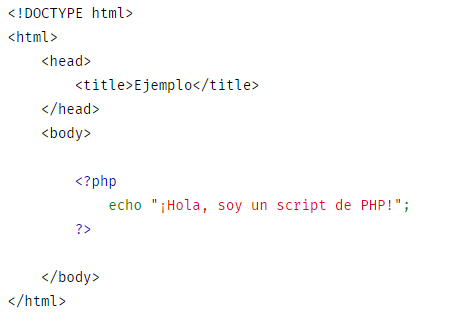

PHP (acrónimo recursivo de PHP: Hypertext Preprocessor) es un lenguaje de código abierto muy popular especialmente adecuado para el desarrollo web y que puede ser incrustado en HTML.
En lugar de usar muchos comandos para mostrar HTML (como en C o en Perl), las páginas de PHP contienen HTML con código incrustado que hace "algo" (en este caso, mostrar "¡Hola, soy un script de PHP!). El código de PHP está encerrado entre las etiquetas especiales de comienzo y final que permiten entrar y salir del "modo PHP". Lo que distingue a PHP de algo del lado del cliente como Javascript es que el código es ejecutado en el servidor, generando HTML y enviándolo al cliente. El cliente recibirá el resultado de ejecutar el script, aunque no se sabrá el código subyacente que era. El servidor web puede ser configurado incluso para que procese todos los ficheros HTML con PHP, por lo que no hay manera de que los usuarios puedan saber qué se tiene debajo de la manga.
PHP nació como un CGI escrito en C que permitía la interpretación de un número limitado de comandos. El sistema fue denominado Personal Home Page Tools y adquirió relativo éxito gracias a que otras personas pidieron a Rasmus que les permitiese utilizar sus programas en sus propias páginas. Dada la aceptación del primer PHP y de manera adicional, su creador diseñó un sistema para procesar formularios al que le atribuyó el nombre de FI (Form Interpreter) y el conjunto de estas dos herramientas, sería la primera versión compacta del lenguaje: PHP/FI. La siguiente gran contribución al lenguaje se realizó a mediados del 97 cuando se volvió a programar el analizador sintáctico, se incluyeron nuevas funcionalidades como el soporte a nuevos protocolos de Internet y el soporte a la gran mayoría de las bases de datos comerciales. Todas estas mejoras sentaron las bases de PHP versión 3. A pesar que por aquel entonces el lenguaje tenía un largo camino por delante para convertirse en una herramienta indispensable, integraba una nutrida cantidad de funcionalidades "de casa", de modo que su comunidad de programadores fue creciendo, atraída por su utilidad y la facilidad para comenzar a desarrollar webs. PHP en su versión 4 incorporó como novedad el motor "Zend", desarrollado con mayor meditación para cubrir las necesidades de aquel momento y solucionar algunos inconvenientes de la anterior versión. Algunas mejoras de esta nueva versión son su rapidez -gracias a que primero se compila y luego se ejecuta, mientras que antes se ejecutaba mientras se interpretaba el código-, su mayor independencia del servidor web -creando versiones de PHP nativas para más plataformas- y un API más elaborado y con más funciones. Sin embargo, la madurez definitiva de PHP llegó con la versión 5, que permaneció durante más de 11 años en el mercado y a día de hoy todavía se encuentra en mantenimiento. La principal novedad de la versión 5 fue una mejorada integración del paradigma de la Programación Orientada a Objetos.
Durante todos los años de vida de PHP 5 hubo muchos cambios. Multitud de herramientas se agregaron al lenguaje, permitiendo hacer cosas que eran altamente demandadas por los desarrolladores y que otros lenguajes más nuevos habían incorporado de salida. Uno de los ejemplos más claros fue el autoload de clases, lo que permitió la incorporación del gestor de paquetes Composer. Sin embargo, 11 años con la misma versión sugería que el lenguaje se había estancado y PHP fue perdiendo adeptos, aunque en términos estadísticos, número de desarrolladores y demanda laboral, su superioridad sigue siendo abrumadora. Entre todo ese tiempo varias situaciones hicieron que no se llegara a presentar PHP 6 y finalmente la comunidad decidió saltar ese número de versión y lanzar directamente PHP 7. PHP 7 a día de hoy es una realidad. Las mejoras en cuanto a rendimiento son muy notables y ha situado de nuevo el lenguaje entre los más poderosos. Está disponible en cantidad de servidores, pero sin embargo su adopción todavía no es total. El motivo es que PHP tiene cantidad de librerías y software que no ha sido totalmente actualizado o que arroja errores al ejecutarse bajo esa nueva versión. En los próximos meses o años la situación cambiará, porque PHP 7 es muy deseable para cualquier proyecto.
Aunque esta imagen es algo antigua, nos indica que el número de servidores que utilizan PHP se ha disparado, lo que demuestra que PHP es una tecnología muy popular. Esto es debido, entre otras razones, a que PHP es el complemento ideal para que el tándem Linux-Apache sea compatible con la programación del lado del servidor de sitios web. Gracias a la aceptación que ha logrado, y los grandes esfuerzos realizados por una creciente comunidad de colaboradores para implementarlo de la manera más óptima, podemos asegurar que el lenguaje se convertirá en un estándar que compartirá los éxitos augurados al conjunto de sistemas desarrollados en código abierto. A día de hoy, pocas herramientas de entre las más usadas para el desarrollo de sitios o aplicaciones web no están realizadas con PHP. WordPress, Drupal, Magento, Prestashop, etc. son ejemplos de ello. Esa tendencia no para de crecer, pero además ahora le tenemos que sumar una cantidad enorme de frameworks como Symfony, Laravel o Zend, que han permitido convertir a PHP en un lenguaje todavía más poderoso, productivo y capaz de implementar las mejores prácticas para la salud de los proyectos.
A continuación un link de un video que nos enseña acerca de PHP: https://www.youtube.com/watch?v=m-ovirhigVQ